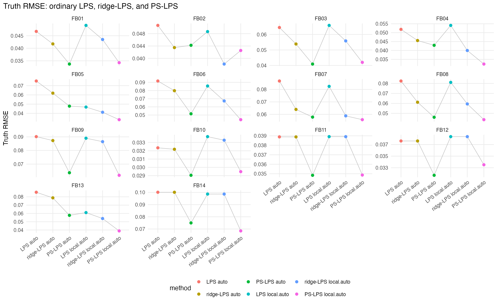
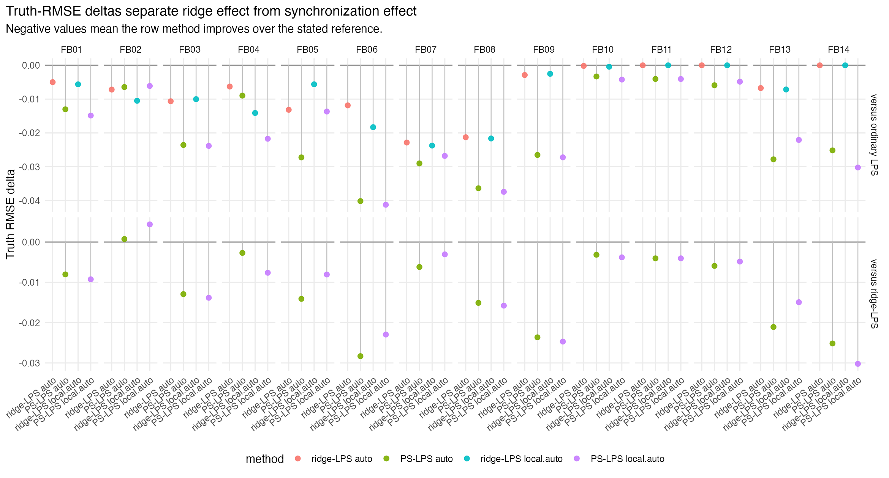
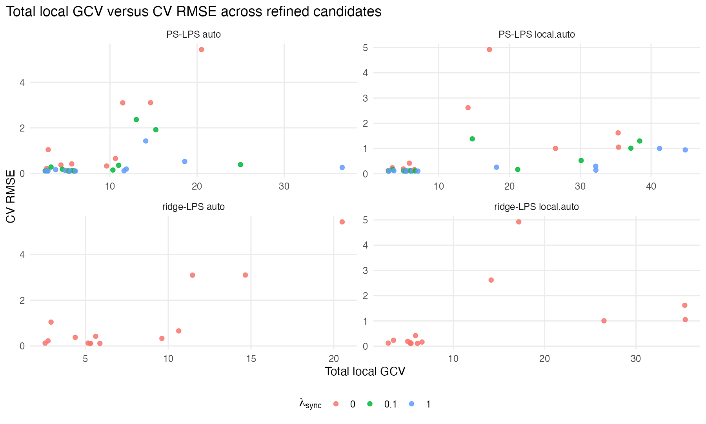
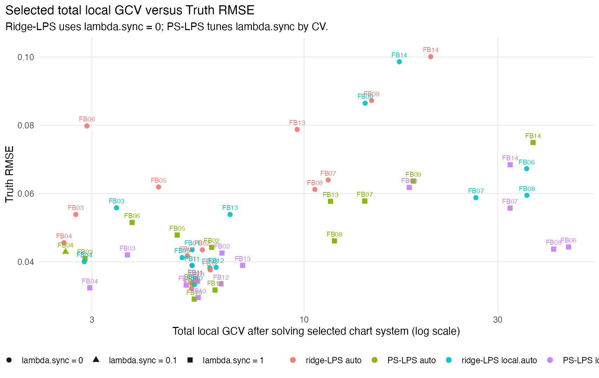
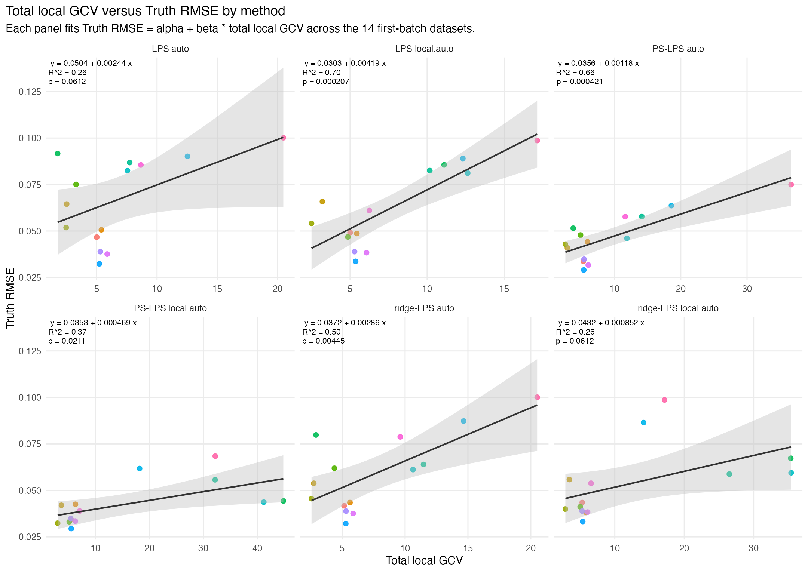
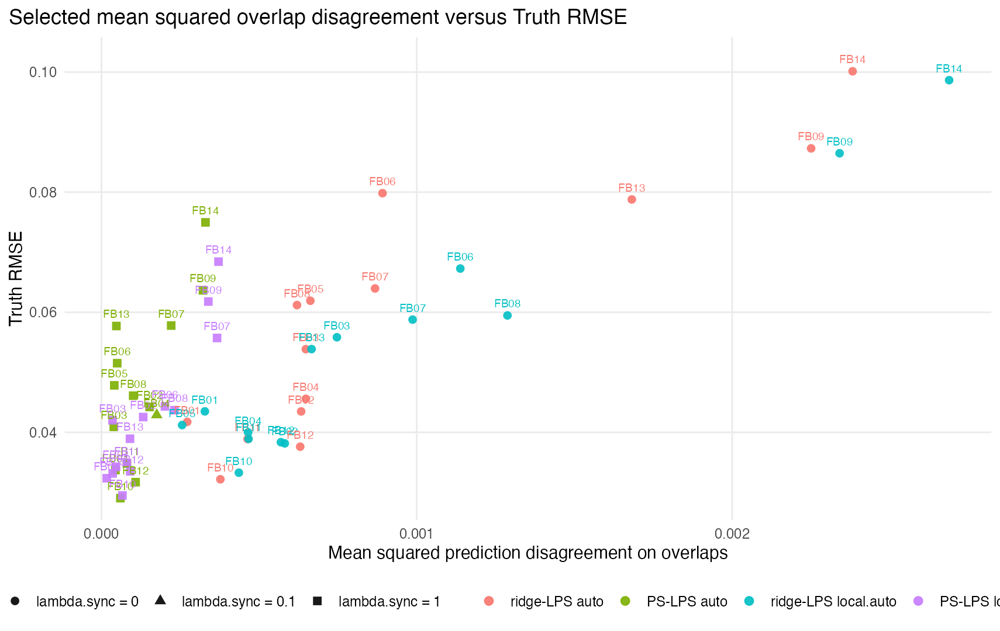
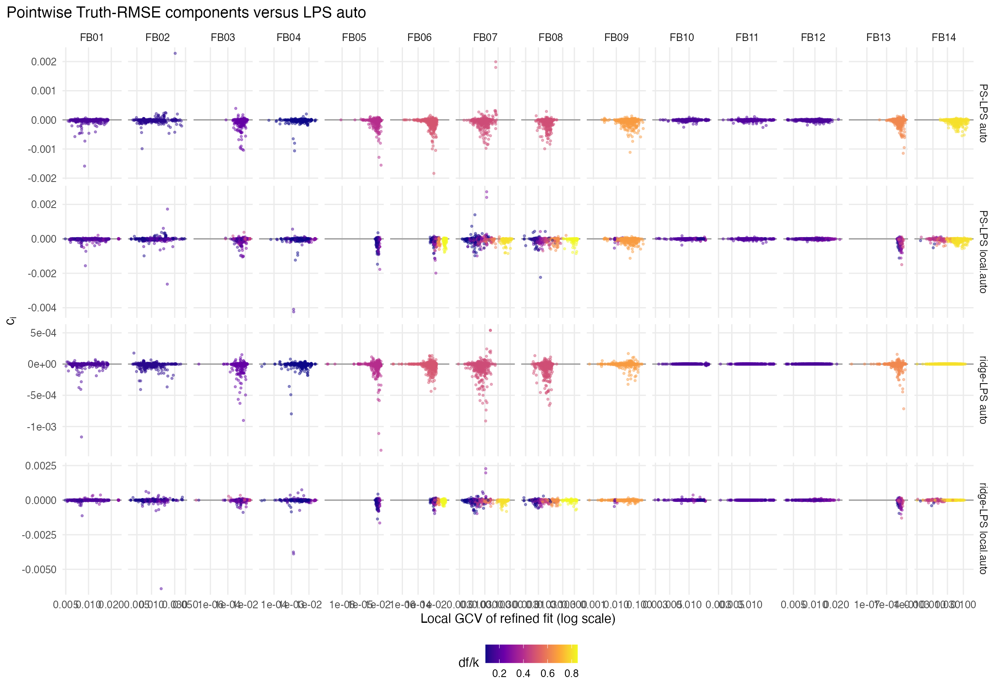

This audit-response report separates three quantities that were confounded in the first PS-LPS report: ordinary LPS, independent ridge-stabilized LPS with \(\lambda_{\mathrm{sync}}=0\) , and prediction-synchronized LPS with CV-selected \(\lambda_{\mathrm{sync}}\) . All refined fits reuse the support size, kernel, degree, and chart dimension policy selected by the corresponding ordinary LPS run.
With \(\lambda_{\mathrm{ridge}}=0\) and \(\lambda_{\mathrm{sync}}=0\) , PS-LPS is now tested to reproduce ordinary independent LPS full-data fitted values. The production comparison here uses an explicit small ridge and therefore compares PS-LPS to the matched ridge-LPS baseline, not only to ordinary LPS.
PS-LPS lambda grid: {0, 0.1, 1}. Ridge scale lambda.ridge: 1e-08. Sync neighbor size: 3. Best-method counts: LPS auto=0; ridge-LPS auto=0; PS-LPS auto=5; LPS local.auto=0; ridge-LPS local.auto=1; PS-LPS local.auto=8.
Matched ridge-LPS comparison: PS-LPS auto=13/14 wins; PS-LPS local.auto=13/14 wins. This is the intended cautious reading: median improvement and dataset-wise wins over matched ridge-LPS, not a claim of universal dominance on every dataset or a broad validation result.

Lower Truth RMSE is better. Gray lines connect methods within a dataset.
The next figure is the main correction to the original experiment. The upper comparison asks whether ridge-stabilized and synchronized fits improve over ordinary LPS. The lower comparison asks whether positive synchronization improves over the matched ridge-LPS baseline.

Negative values mean the row method has lower Truth RMSE than the reference named in the facet row.
Total local GCV is computed after solving the selected chart system. For PS-LPS this uses synchronized chart coefficients, so it is not the same diagnostic as ordinary independent LPS local GCV.

Each point is one ridge-LPS or PS-LPS lambda candidate.

Synthetic-truth diagnostic for selected refined fits.

Each panel is one method. The fitted line is the linear model \(\mathrm{TruthRMSE}=\alpha+\beta\,\mathrm{TotalLocalGCV}\) across the 14 first-batch datasets.

Mean squared disagreement is reported even for \(\lambda_{\mathrm{sync}}=0\) , where it is diagnostic rather than penalized.

Positive \(c_i\) means the refined fit contributes more Truth-RMSE than LPS auto at that point. Colors show local degrees-of-freedom ratio.
| batch_id | dataset_id | method | selected_lambda_sync | lambda_ridge | selected_support_size | selected_kernel | selected_chart_dim | selected_cv_rmse_observed | truth_rmse | total_local_gcv_ps | sync_energy | mean_sync_squared_disagreement | ridge_median | elapsed_sec |
|---|---|---|---|---|---|---|---|---|---|---|---|---|---|---|
| FB01 | LA-D1-RAW-N500 | ridge-LPS auto | 0 | 1e-08 | 35 | gaussian | 2 | 0.1248 | 0.041742 | 5.1555 | 4.5721 | 0.00027213 | 0.00000028148 | 0.29 |
| FB01 | LA-D1-RAW-N500 | ridge-LPS local.auto | 0 | 1e-08 | 34 | gaussian | 2 | 0.13755 | 0.043495 | 5.3 | 5.3394 | 0.000328 | 0.0000002737 | 0.239 |
| FB01 | LA-D1-RAW-N500 | PS-LPS auto | 1 | 1e-08 | 35 | gaussian | 2 | 0.10923 | 0.033713 | 5.2945 | 0.74576 | 0.000044388 | 0.0000090756 | 33.31 |
| FB01 | LA-D1-RAW-N500 | PS-LPS local.auto | 1 | 1e-08 | 34 | gaussian | 2 | 0.11097 | 0.034254 | 5.4635 | 0.75465 | 0.000046359 | 0.0000088184 | 31.15 |
| FB02 | LA-D1-HC-Li-N500 | ridge-LPS auto | 0 | 1e-08 | 26 | gaussian | 1 | 0.42181 | 0.043483 | 5.6152 | 7.8249 | 0.00063334 | 0.00000021091 | 0.174 |
| FB02 | LA-D1-HC-Li-N500 | ridge-LPS local.auto | 0 | 1e-08 | 32 | gaussian | 2 | 0.42026 | 0.038162 | 5.8601 | 8.9517 | 0.00058138 | 0.00000025694 | 0.177 |
| FB02 | LA-D1-HC-Li-N500 | PS-LPS auto | 1 | 1e-08 | 26 | gaussian | 1 | 0.11429 | 0.044227 | 5.919 | 1.8875 | 0.00015278 | 0.0000079661 | 17.91 |
| FB02 | LA-D1-HC-Li-N500 | PS-LPS local.auto | 1 | 1e-08 | 32 | gaussian | 2 | 0.12091 | 0.042546 | 6.2746 | 2.0411 | 0.00013256 | 0.000009878 | 27.71 |
| FB03 | LA-D1-HC-Lc-N500 | ridge-LPS auto | 0 | 1e-08 | 27 | tricube | 2 | 0.22135 | 0.05385 | 2.7383 | 8.1246 | 0.00064804 | 0.00000010771 | 0.18 |
| FB03 | LA-D1-HC-Lc-N500 | ridge-LPS local.auto | 0 | 1e-08 | 23 | tricube | 2 | 0.23675 | 0.055836 | 3.4493 | 7.8814 | 0.00074671 | 0.000000093764 | 0.172 |
| FB03 | LA-D1-HC-Lc-N500 | PS-LPS auto | 1 | 1e-08 | 27 | tricube | 2 | 0.11109 | 0.040919 | 2.8849 | 0.49135 | 0.000039191 | 0.0000074899 | 19.86 |
| FB03 | LA-D1-HC-Lc-N500 | PS-LPS local.auto | 1 | 1e-08 | 23 | tricube | 2 | 0.12227 | 0.042011 | 3.6696 | 0.37252 | 0.000035294 | 0.00000637 | 14.44 |
| FB04 | LA-D1-HC-Gv-N500 | ridge-LPS auto | 0 | 1e-08 | 35 | tricube | 1 | 0.12096 | 0.045584 | 2.5608 | 10.89 | 0.0006483 | 0.00000014461 | 0.184 |
| FB04 | LA-D1-HC-Gv-N500 | ridge-LPS local.auto | 0 | 1e-08 | 35 | tricube | 1 | 0.12264 | 0.039983 | 2.8733 | 7.8131 | 0.00046511 | 0.00000014461 | 0.251 |
| FB04 | LA-D1-HC-Gv-N500 | PS-LPS auto | 0.1 | 1e-08 | 35 | tricube | 1 | 0.11433 | 0.0429 | 2.5836 | 2.9469 | 0.00017543 | 0.0000011706 | 31.64 |
| FB04 | LA-D1-HC-Gv-N500 | PS-LPS local.auto | 1 | 1e-08 | 35 | tricube | 1 | 0.10508 | 0.03236 | 2.9651 | 0.28551 | 0.000016996 | 0.0000090456 | 32.62 |
| FB05 | LA-D1-HC-Bv-N500 | ridge-LPS auto | 0 | 1e-08 | 15 | tricube | 2 | 0.37482 | 0.061913 | 4.3787 | 4.4463 | 0.00066258 | 0.000000066136 | 0.16 |
| FB05 | LA-D1-HC-Bv-N500 | ridge-LPS local.auto | 0 | 1e-08 | 34 | gaussian | 2 | 0.19184 | 0.041212 | 5.0057 | 4.103 | 0.00025594 | 0.00000026319 | 0.18 |
| FB05 | LA-D1-HC-Bv-N500 | PS-LPS auto | 1 | 1e-08 | 15 | tricube | 2 | 0.13276 | 0.047828 | 4.8683 | 0.27382 | 0.000040805 | 0.0000037583 | 6.658 |
| FB05 | LA-D1-HC-Bv-N500 | PS-LPS local.auto | 1 | 1e-08 | 34 | gaussian | 2 | 0.10857 | 0.033157 | 5.1242 | 0.56938 | 0.000035516 | 0.0000094563 | 30.46 |
| FB06 | LA-D2-RAW-N500 | ridge-LPS auto | 0 | 1e-08 | 30 | tricube | 4 | 1.0436 | 0.079829 | 2.9175 | 12.258 | 0.00089132 | 0.000000072596 | 0.768 |
| FB06 | LA-D2-RAW-N500 | ridge-LPS local.auto | 0 | 1e-08 | 33 | gaussian | 4 | 1.6205 | 0.06728 | 35.346 | 17.429 | 0.001138 | 0.00000024366 | 0.944 |
| FB06 | LA-D2-RAW-N500 | PS-LPS auto | 1 | 1e-08 | 30 | tricube | 4 | 0.16569 | 0.051517 | 3.7694 | 0.68807 | 0.00005003 | 0.0000031702 | 24.8 |
| FB06 | LA-D2-RAW-N500 | PS-LPS local.auto | 1 | 1e-08 | 33 | gaussian | 4 | 0.94511 | 0.044332 | 44.829 | 3.0861 | 0.0002015 | 0.000003586 | 31.3 |
| FB07 | LA-D2-HC-TOP1-N500 | ridge-LPS auto | 0 | 1e-08 | 21 | gaussian | 3 | 3.0991 | 0.063963 | 11.465 | 8.0936 | 0.00086767 | 0.00000015973 | 0.474 |
| FB07 | LA-D2-HC-TOP1-N500 | ridge-LPS local.auto | 0 | 1e-08 | 35 | gaussian | 3 | 1.0061 | 0.058772 | 26.499 | 16.375 | 0.00098669 | 0.00000026742 | 0.93 |
| FB07 | LA-D2-HC-TOP1-N500 | PS-LPS auto | 1 | 1e-08 | 21 | gaussian | 3 | 1.4277 | 0.057782 | 14.11 | 2.0634 | 0.0002212 | 0.0000095947 | 11.99 |
| FB07 | LA-D2-HC-TOP1-N500 | PS-LPS local.auto | 1 | 1e-08 | 35 | gaussian | 3 | 0.30071 | 0.055718 | 32.172 | 6.0857 | 0.00036671 | 0.000020009 | 34.47 |
| FB08 | LA-D3-RAW-N500 | ridge-LPS auto | 0 | 1e-08 | 31 | gaussian | 4 | 0.65807 | 0.061194 | 10.632 | 8.9852 | 0.00062018 | 0.00000023241 | 0.916 |
| FB08 | LA-D3-RAW-N500 | ridge-LPS local.auto | 0 | 1e-08 | 33 | gaussian | 4 | 1.0531 | 0.05947 | 35.402 | 19.988 | 0.0012875 | 0.00000024741 | 0.992 |
| FB08 | LA-D3-RAW-N500 | PS-LPS auto | 1 | 1e-08 | 31 | gaussian | 4 | 0.19709 | 0.046105 | 11.879 | 1.459 | 0.0001007 | 0.0000027714 | 27.41 |
| FB08 | LA-D3-RAW-N500 | PS-LPS local.auto | 1 | 1e-08 | 33 | gaussian | 4 | 1.0043 | 0.043691 | 41.196 | 3.5964 | 0.00023165 | 0.000002944 | 31.51 |
| FB09 | LA-13K-SUB-N500 | ridge-LPS auto | 0 | 1e-08 | 15 | gaussian | 3 | 3.1045 | 0.087292 | 14.661 | 13.242 | 0.0022503 | 0.00000010867 | 0.6 |
| FB09 | LA-13K-SUB-N500 | ridge-LPS local.auto | 0 | 1e-08 | 15 | gaussian | 3 | 2.6184 | 0.086479 | 14.142 | 13.773 | 0.0023406 | 0.00000010867 | 0.595 |
| FB09 | LA-13K-SUB-N500 | PS-LPS auto | 1 | 1e-08 | 15 | gaussian | 3 | 0.52631 | 0.063652 | 18.584 | 1.8951 | 0.00032206 | 0.0000013594 | 6.145 |
| FB09 | LA-13K-SUB-N500 | PS-LPS local.auto | 1 | 1e-08 | 15 | gaussian | 3 | 0.25876 | 0.061784 | 18.164 | 1.9954 | 0.00033909 | 0.0000013594 | 5.999 |
| FB10 | SYN-PARA-LINE-N500 | ridge-LPS auto | 0 | 1e-08 | 35 | gaussian | 2 | 0.11138 | 0.032183 | 5.2822 | 5.4199 | 0.00037724 | 0.00000027814 | 0.182 |
| FB10 | SYN-PARA-LINE-N500 | ridge-LPS local.auto | 0 | 1e-08 | 32 | gaussian | 2 | 0.11274 | 0.033279 | 5.3711 | 5.6888 | 0.00043581 | 0.00000025386 | 0.186 |
| FB10 | SYN-PARA-LINE-N500 | PS-LPS auto | 1 | 1e-08 | 35 | gaussian | 2 | 0.10845 | 0.029042 | 5.3642 | 0.86515 | 0.000060216 | 0.0000025506 | 26.16 |
| FB10 | SYN-PARA-LINE-N500 | PS-LPS local.auto | 1 | 1e-08 | 32 | gaussian | 2 | 0.10905 | 0.029482 | 5.4847 | 0.87104 | 0.000066728 | 0.0000022971 | 21.68 |
| FB11 | SYN-SADDLE-LINE-N500 | ridge-LPS auto | 0 | 1e-08 | 32 | gaussian | 2 | 0.11309 | 0.038883 | 5.301 | 6.1295 | 0.00046344 | 0.00000025492 | 0.177 |
| FB11 | SYN-SADDLE-LINE-N500 | ridge-LPS local.auto | 0 | 1e-08 | 32 | gaussian | 2 | 0.11299 | 0.038909 | 5.2938 | 6.1696 | 0.00046648 | 0.00000025492 | 0.177 |
| FB11 | SYN-SADDLE-LINE-N500 | PS-LPS auto | 1 | 1e-08 | 32 | gaussian | 2 | 0.10529 | 0.034839 | 5.4027 | 1.0669 | 0.000080666 | 0.0000024292 | 22.29 |
| FB11 | SYN-SADDLE-LINE-N500 | PS-LPS local.auto | 1 | 1e-08 | 32 | gaussian | 2 | 0.10522 | 0.034867 | 5.3963 | 1.0693 | 0.000080845 | 0.0000024292 | 22.4 |
| FB12 | SYN-TWO-PLANES-N600 | ridge-LPS auto | 0 | 1e-08 | 35 | gaussian | 2 | 0.11118 | 0.03761 | 5.8701 | 10.82 | 0.0006303 | 0.00000027562 | 0.227 |
| FB12 | SYN-TWO-PLANES-N600 | ridge-LPS local.auto | 0 | 1e-08 | 35 | gaussian | 2 | 0.11167 | 0.038356 | 6.0703 | 9.7699 | 0.00056914 | 0.00000027562 | 0.217 |
| FB12 | SYN-TWO-PLANES-N600 | PS-LPS auto | 1 | 1e-08 | 35 | gaussian | 2 | 0.10797 | 0.031703 | 6.032 | 1.8604 | 0.00010838 | 0.0000023738 | 39.08 |
| FB12 | SYN-TWO-PLANES-N600 | PS-LPS local.auto | 1 | 1e-08 | 35 | gaussian | 2 | 0.10838 | 0.033513 | 6.2407 | 1.5658 | 0.000091217 | 0.0000023738 | 43.35 |
| FB13 | SYN-SIMPLEX-FACES-N600 | ridge-LPS auto | 0 | 1e-08 | 16 | tricube | 3 | 0.32972 | 0.078785 | 9.6165 | 15.129 | 0.0016818 | 0.000000054283 | 0.239 |
| FB13 | SYN-SIMPLEX-FACES-N600 | ridge-LPS local.auto | 0 | 1e-08 | 33 | gaussian | 3 | 0.16532 | 0.053864 | 6.5719 | 13.221 | 0.00066636 | 0.00000024487 | 0.267 |
| FB13 | SYN-SIMPLEX-FACES-N600 | PS-LPS auto | 1 | 1e-08 | 16 | tricube | 3 | 0.12141 | 0.057709 | 11.616 | 0.42709 | 0.000047477 | 0.0000053356 | 12.65 |
| FB13 | SYN-SIMPLEX-FACES-N600 | PS-LPS local.auto | 1 | 1e-08 | 33 | gaussian | 3 | 0.10478 | 0.03894 | 7.054 | 1.7962 | 0.000090532 | 0.000011206 | 51.43 |
| FB14 | SYN-RANK-BLOCKS-N600-P100 | ridge-LPS auto | 0 | 1e-08 | 35 | gaussian | 6 | 5.4328 | 0.10013 | 20.509 | 40.958 | 0.0023819 | 0.00000024506 | 1.758 |
| FB14 | SYN-RANK-BLOCKS-N600-P100 | ridge-LPS local.auto | 0 | 1e-08 | 35 | gaussian | 6 | 4.9211 | 0.098648 | 17.164 | 46.222 | 0.002688 | 0.00000024506 | 1.749 |
| FB14 | SYN-RANK-BLOCKS-N600-P100 | PS-LPS auto | 1 | 1e-08 | 35 | gaussian | 6 | 0.26439 | 0.07497 | 36.656 | 5.6739 | 0.00032995 | 0.000044067 | 56.36 |
| FB14 | SYN-RANK-BLOCKS-N600-P100 | PS-LPS local.auto | 1 | 1e-08 | 35 | gaussian | 6 | 0.14182 | 0.068432 | 32.195 | 6.3835 | 0.00037122 | 0.000044067 | 54.88 |